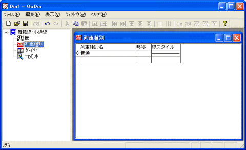
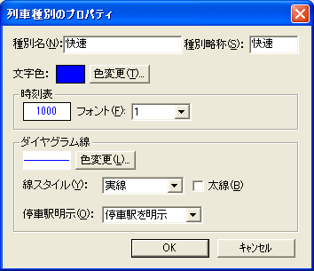
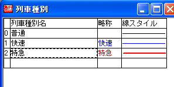

路線上で設定されている列車種別の一覧を入力します。
一連の操作方法は、『駅の入力』とほぼ同じです。
[路線ビュー]の[列車種別]アイコンをクリックしてください。
・・・ 『作業領域』に、[列車種別] という名前のウインドウが現れます。以後、このウインドウを『列車種別ビュー』と表記します。

（図：列車種別ビュー）
『列車種別ビュー』には、初期状態で列車種別『普通』が登録されています。
『列車種別ビュー』は、『グリッド形式ビュー』（Microsoft Excel のような、表形式のビュー）です。
『グリッド形式ビュー』については、『グリッド形式ビュー』について も参照してください。
１． 『列車種別ビュー』のフォーカスセルが一番下の行にある状態で、メニュー[編集]→[列車種別を挿入]を選択してください。
・・・ [列車種別のプロパティ] ダイアログが開きます。
『列車種別ビュー』のフォーカスセルが一番下の行にある状態で、 [Ctrl]+[Ins]
キーを押しても、同じ効果があります。
『列車種別ビュー』の一番下の段のセルをダブルクリックしても、同じ効果があります。
『列車種別ビュー』のフォーカスセルが一番下の[列車種別名]列にある状態で、キーボードから列車種別名の入力を開始することができます。
２． [列車種別のプロパティ] ダイアログに、列車種別の情報を入力してください。

（図：列車種別のプロパティ）
[列車種別のプロパティ]の項目には、以下のような意味があります。
| [種別名] | 種別名を指定してください。省略できません。 |
| [種別略称] | これは、『時刻表ビュー』で、種別欄に表示される文字列を指定します。このテキストの長さは、半角で6文字（全角なら3文字）までです。 |
| [文字色] | この種別を表示する際の文字色を指定してください。これは、『時刻表ビュー』・『ダイヤグラムビュー』両方に適用されます。 |
| [時刻表] | この列車種別を時刻表ビューで表示する場合のフォントを、1〜8で選択してください。 この番号は、『路線ファイルのプロパティ』ダイアログの[フォント設定]の『時刻表ビュー 1』〜『時刻表ビュー 8』で設定されたフォントに対応します。 |
| [ダイヤグラム線] | ダイヤグラム上での、この列車種別の線の色・スタイルを指定することができます。 |
参照：列車種別のプロパティ
３． [列車種別のプロパティ]ダイアログで、列車種別の情報の入力が終わったら、[OK]
ボタンを押してください。
・・・ [列車種別のプロパティ]ダイアログが消えます。『列車種別ビュー』に、入力した列車種別が追加されます。
４． ２．〜３．を繰り返して、すべての列車種別の情報を入力してください。
